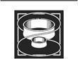

Bir Plan
Min, dışarıdaki alçak tavanlı koridora çıkınca odadan gelen ilk tiz çığlık üzerine, tırnaklarını avuçlarına batırdı. Kendine engel olana kadar odaya doğru bir adım attı ve durduğu zaman gözlerine yaşlar doldu. Işık, yardım et bana. Tek yapabildiğim, işleri daha da kötüleştirmek. Egwene, özür dilerim. Özür dilerim.
Kendini işe yaramazdan da beter hissederek eteklerini toplayıp koştu ve Egwene'in çığlıkları peşinden geldi. Orada kalmaya, gönlü elvermiyor ve oradan gitmek de kendisini korkak hissetmesine neden oluyordu. Gözyaşlarıyla yarı körleştiğinden, kendini daha farkında olmadan sokakta buldu. Niyeti aslında odasına dönmekti, ama bunu yapamadı. Yandaki çatının altında sıcak ve güven içinde otururken, birilerinin Egwene'in canını yaktığı düşüncesine katlanamıyordu. Gözyaşlarını silerek pelerinini omuzlarına atıp sokakta yürümeye başladı. Gözlerini ne zaman silse, yanaklarından yeni yaşlar süzülmeye başlıyordu. Ulu orta ağlamaya alışık değildi, ama kendini bu kadar çaresiz, bu kadar işe yaramaz hissetmeye de alışık değildi. Nereye gittiğini bilmiyordu, tek bildiği, Egwene'in çığlıklarından olabildiğince uzaklaşmak zorunda olduğuydu.
"Min!"
Kısık çığlık üzerine, olduğu yerde kalakaldı. Başta ona kimin seslendiğini çıkaramadı. Damane'lerin barındığı binaların bu kadar yakınındaki sokaklarda oldukça az sayıda insan dolaşırdı. İki Seanchan askerini renkli tebeşirlerle çizeceği portreleriyle ilgilenmesini sağlayan tek bir adam dışında, tüm yerliler kaçarmış gibi görünmeden çabucak ayak altından çekilmeye çalışırdı. Yakından bir çift sul'dam geçti, damane'leri gözlerini yerden ayırmadan arkadan geliyordu; Seanchan kadınlar denize açılmadan önce daha kaç marath'damane bulmayı beklediklerinden bahsediyordu. Min'in gözleri uzun pösteki paltolu iki kadının üzerinden geçti, kadınlar ona yaklaşmaya başlayınca da hayretle onlara döndü. "Nynaeve? Elayne?"
"Ta kendileri." Nynaeve'in gülümsemesi zorlamaydı; iki kadının da gözleri, kaşları endişeyle çatmamaya çalışıyorlarmış gibi gergindi. Min, hayatında onlar kadar güzel bir manzara gördüğünü sanmıyordu. "O renk sana yakışmış," diye devam etti Nynaeve. "Elbise giymeye uzun zaman önce başlaman gerekirdi. Gerçi senin üzerinde gördükten sonra ben de pantolon giymeyi düşünmeye başladım." Daha yakına gelip Min'in yüzünü gördüğünde sesi sertleşti. "Sorun nedir?"
"Sen ağlamışsın," dedi Elayne. "Egwene'e bir şey mi oldu?"
Min irkildi ve omzunun üzerinden geriye baktı. Onun kullandığı basamaklardan bir sul'dam ile damane indi ve diğer yöne, ahırlara ve at bahçelerine doğru gittiler. Giysisinde şimşekli paneller olan bir başka kadın merdivenlerin başında durmuş, hâlâ içeride olan biriyle konuşuyordu. Min arkadaşlarını kollarından kavrayarak onları sokaktan limana doğru aceleyle yürüttü. "İkiniz için burası tehlikeli. Işık, adına, Falme'de olmak sizin için tehlikeli. Her yanda damane'ler var ve sizi bulurlarsa... Damane'lerin ne olduğunu biliyor musunuz? Ah, ikinizi de görmek ne kadar güzel, bilemezsiniz."
"Herhalde seni görmenin yarısı kadar bile güzel değildir," dedi Nynaeve. "Egwene'in nerede olduğunu biliyor musun? O binalardan birinde mi? İyi mi?"
Min, "Beklenebileceği kadar iyi," demeden önce sadece biraz tereddüt etti. Min her şeyi ayan beyan görüyordu, onlara Egwene'e o an ne olduğunu söylerse, Nynaeve büyük olasılıkla bunu durdurmak için bir hışımla oraya dalardı. Işık, ne olur artık bitmiş olsun. Işık, ne olur bir kez olsun onlar kırmadan önce o inatçı boynunu eğsin. "Ancak onu nasıl çıkaracağımı bilmiyorum. Gemisine onunla birlikte ulaşabilirsek bizi alacağını sandığım bir kaptanla tanıştım -oraya kadar gidemezsek bize yardım etmeyecek ve onu suçladığımı söyleyemiyorum- ama bu kadarını bile nasıl yapacağım konusunda en ufak bir fikrim yok."
"Bir gemi," dedi Nynaeve düşünceli bir tavırla. "Ben doğuya atla gitmeyi düşünmüştüm, ama itiraf etmeliyim ki, bu konuda endişelerim vardı. Hesabıma göre Seanchan devriyelerinden tamamen kurtulana kadar neredeyse Tümentepe sınırlarından çıkmamız gerekiyordu, üstelik de Almoth Ovası'nda bir tür muharebe var. Bir gemiye binmek hiç aklıma gelmemişti. Atlarımız var ve geçiş için paramız yok. Bu adam ne kadar istiyor?"
Min omuzlarını silkti. "İşi o kadar ileriye hiç götüremedim. Bizim de hiç paramız yok. Denize açılana kadar ödemeyi erteleyebileceğimi düşünmüştüm. Daha sonra da... eh, bizi Seanchanların olduğu herhangi bir limana bırakacağını sanmam. Bizi nereye atarsa atsın, kesinlikle buradan iyi olacaktır. Asıl sorun, onu denize açılmaya ikna etmekte. Bunu istiyor, ama limanın dışında da devriyeleri var ve iş işten geçmeden gemilerinde bir damane olup olmadığını öğrenmenin bir yolu yok. 'Bana kendi güvertemde bir damane verin,' diyor. 'Hemen şu an denize açılayım.' Sonra da güverte derinliğinden, resiflerden ve rüzgâraltındaki kıyılardan bahsetmeye başlıyor. Bu dediklerinden tek kelime anlamıyorum, ama ara sıra gülümseyip başımı sallıyorum, o da konuşmaya devam ediyor ve sanırım onu yeterince konuşturabilirsem, kendi kendini denize açılmaya ikna edecek." Titrek bir nefes aldı; gözleri tekrar batmaya başlamıştı. "Ah, artık kendi kendisini ikna etmesine izin vermek için zamanımız kaldığını sanmıyorum. Nynaeve, Egwene'i Seanchan'a gönderecekler, üstelik de yakında."
Elayne'in nefesi kesildi. "Ama neden?"
"Cevherleri bulabiliyor," dedi Min çaresiz bir halde. "Birkaç gün, diyor ve birkaç gün bu adamın kendi kendisini denize açılmaya ikna etmesine yeter mi, bilmiyorum. Yetse bile, o Gölgedölü tasmayı boynundan nasıl çıkaracağız? Onu o evden nasıl çıkaracağız?"
"Keşke Rand burada olsaydı." Elayne içini çekti ve ikisi birden dönüp ona baktıklarında çabucak ekledi, "Eh, bir kılıcı var, değil mi? Keşke yanımızda kılıçlı biri olsaydı. On kişi. Yüz kişi."
"Bizim şimdi ihtiyacımız olan kılıç veya kas gücü değil," dedi Nynaeve. "Gerek duyduğumuz tek şey zeka. Erkekler genellikle göğüs kıllarıyla düşünür." Paltosunun içindeki bir şeyi yoklarmış gibi dalgınlıkla göğsüne dokundu. "Çoğu öyledir."
"Bir orduya ihtiyacımız olurdu," dedi Min. "Büyük bir orduya. Duyduğum kadarıyla Seanchanlar Tarabonlular ve Domanilerle karşılaştıklarında sayıca dezavantajlı bir durumda olmalarına rağmen her savaşı kolaylıkla kazanmışlar." Bir damane ile sul'dam yokuşu tırmanırken Nynaeve ile Elayne'i aceleyle sokağın karşısına geçirdi. Israr etmek zorunda kalmadığı için sevinmişti; ikisi de bağlı kadınları kendisi kadar ihtiyatla izliyordu. "Bir ordumuz olmadığına göre, bunu üçümüz yapmak zorundayız. Umarım ikinizden birinin aklına benim düşünemediğim bir şey gelir; o kadar kafa patlattım, yine de iş a'dam'a, yani yularla tasmaya gelince tıkanıyorum. Sul'dam'lar onları açarken kimsenin yakından bakmasından hoşlanmıyor. Bunun yardımı olacaksa sizi içeri sokabileceğimi sanıyorum. En azından birinizi. Beni hizmetkâr sanıyorlar, ama hizmetkârların konukları olabilir, hizmetkârlara ayrılmış odalardan çıkmadıkları sürece."
Nynaeve düşünceli bir tavırla kaşlarını çatmıştı, ama yüzü birden aydınlanarak azimli bir ifadeye büründü. "Sen endişe etme, Min. Benim birkaç fikrim var. Burada zamanımı boşa harcamadım. Sen beni bu adama götür. Sırtlarını diktikleri zamanki Köy Kurulu üyelerinden daha çetin cevizse, ben de bu paltomu yerim."
Elayne sırıtarak başını salladı ve Min Falme'ye geldiğinden beri ilk kez gerçekten umutlandı. Bir an Min kendini diğer iki kadının auralarını okurken yakaladı. Tehlike vardı, ama bu beklenmeyecek şey değildi -ve daha önce gördüğü imgelere yenileri eklenmişti; zaman zaman böyle olurdu. Nynaeve'in başının üzerinde ağır, altın bir erkek yüzüğü, Elayne'inkindeyse kor bir demir ile bir balta yüzüyordu. Bunların bela anlamına geldiğinden emindi, ama bunlar uzak ve gelecekte olacak şeyler gibi görünüyordu. Okuma sadece bir an sürdü, sonra tek gördüğü kendisini beklentiyle izleyen Elayne ve Nynaeve'di.
"Aşağıda, limanın yakınlarında," dedi.
Aşağı meyleden sokak onlar indikçe giderek kalabalıklaştı. Sokak satıcıları iç bölgelerden yük arabalarını getirmişlerdi ve kış gelip geçene kadar oradan ayrılmayacak tacirlerle haşır neşirdi; tepsili seyyar satıcılar gelen geçene sesleniyordu, nakışlı pelerinler içindeki Falmeliler, ağır, pösteki paltolu çiftçi ailelerinin yanından geçiyordu. Sahilin daha ilerisindeki köylerden pek çok kişi buraya kaçmıştı. Min bunda bir anlam göremiyordu -Seanchanların onları ziyaret etmesi ihtimalinden dört bir yanlarında Seanchanların mutlaka bulunduğu bir durama atlamışlardı- ama Seachanların bir köye ilk geldiklerinde yaptıklarını duymuştu ve tekrar gelmelerinden korkan köylüleri suçlayamıyordu. Bir Seanchan yanından yürüyünce veya perdeli bir tahtırevan dik yokuştan adamların sırtında geçince herkes eğilerek selam veriyordu.
Min, Nynaeve ile Elayne'in eğilerek selam verme meselesini bildiğini görünce memnun oldu. Belden yukarısı çıplak taşıyıcılar da, eğilen insanlara kibirli, zırhlı askerlerden fazla dikkat etmiyordu, ama eğilmekte kusur eden biri kesinlikle dikkatlerini çekerdi. Yokuşu inerken aralarında biraz konuştular ve Min başta ikisinin şehre kendisiyle Egwene'den sadece birkaç gün sonra geldiklerini öğrenince şaşırdı. Fakat bir an sonra, sokaktaki kalabalık arasında daha önce karşılaşmamış olmalarında şaşılacak bir şey olmadığına karar verdi. Egwene'den uzakta mecbur olduğundan fazla zaman geçirmek istememişti; her zaman kendisine izin verilen görüşmeye gidip de Egwene'i orada bulamama korkusu vardı. Şimdi de o gitmiş olacak. Nynaeve bir şey düşünemezse.
Havadaki tuz ve zift kokusu yoğunlaştı ve martılar başlarının üzerinde dönerek haykırdılar. Kalabalığın içinde, çoğu soğuğa rağmen hâlâ çıplak ayak dolaşan denizciler belirdi.
Hanın adı aceleyle Üç Erik Tomurcuğu olarak değiştirilmişti, ama İzleyici sözcüğü tabelaya gelişigüzel sürülmüş boyanın altından görülüyordu. Dışarıdaki kalabalığa rağmen, salonda doluluk yarıdan az fazlaydı; fiyatlar çok sayıda insanın bira için oturmasına olanak vermeyecek kadar yüksekti. Odayı iki ucundaki şöminelerdeki harlı ateşler ısıtıyordu ve şişman hancı gömleğiyle dolaşıyordu. Üç kadına kaşlarını çatarak baktı ve Min adamın onları kovmasını engelleyen şeyin kendi sırtındaki Seanchan giysisi olduğunu düşündü. Çiftlik kadını giysileri içindeki Nynaeve ve Elayne, kesinlikle harcayacak parası olan kişilere benzemiyordu.
Aradığı adam, köşedeki bir masada, her zamanki yerinde oturuyor, şarabına bakarak bir şeyler mırıldanıyordu. "Konuşacak zamanın var mı, Kaptan Domon?" dedi.
Adam başını kaldırıp baktı ve Min'in yalnız olmadığını görünce eliyle sakalını sıvazladı. Hâlâ tıraşlı üstdudağının sakalla tuhaf göründüğünü düşünüyordu. "Demek paramı yesinler diye arkadaşlarını getirdin, ha? Eh, o Seanchan lordu kargomu satın aldığı için param var. Oturun." Adam birden, "Hancı! Buraya sıcak şarap!" diye böğürünce Elayne zıpladı.
"Mesele yok," dedi Min ona masadaki banklardan birinin ucuna oturarak. "Yalnızca sesi ve görüntüsü ayıya benziyor." Elayne şüpheli bir ifadeyle bankın diğer tarafına oturdu.
"Ayıyım, öyle mi?" Domon güldü. "Belki de öyleyimdir. Ama ya sen, kızım? Buradan gitmeyi aklından çıkardın mı? O elbise bana Seanchan elbisesi gibi geldi."
"Asla!" dedi Min hararetle, ama dumanı tüten, buharlı şarapla birlikte gelen bir garson kızı görünce sustu.
Domon da onun kadar temkinliydi. Kızın paralarla birlikte gitmesini bekledikten sonra, "Talih batsın bana, kızım. Niyetim seni gücendirmek değildi. İnsanların çoğu lordları Seanchan da olsa, olmasa da, hayatlarına devam etmek istiyor."
Nynaeve önkollarını masaya dayadı. "Biz de hayatlarımıza devam etmek istiyoruz, Kaptan, ama hiçbir Seanchan olmadan. Anladığım kadarıyla yakında denize açılmayı düşünüyorsun."
"Elimden gelse, bugün gideceğim," dedi Domon canı sıkkın bir tavırla. "İki üç günde bir o Turak denen adam beni çağırtıp gördüğüm eski şeyleri anlattırıyor. Aşığa benzer bir halim var mı benim? Bir iki hikâye uydurup yoluma giderim sanmıştım, ama şimdi öyle sanıyorum ki, onu eğlendiremez olduğumda, gitmeme izin vermesiyle, kellemi kestirmesi ihtimalleri birbirine denk olacak. Adam yumuşak görünüyor olabilir, ama demir kadar sert ve onun kadar soğuk yürekli."
"Gemin Seanchanlardan kaçınabilir mi?"
"Talih batsın bana, bir damane Serpinti'yi kıymıklara ayırmadan limandan çıkabilirsem, bunu yapabilirim. Bunun için, denize çıktığımda içinde damane olan bir Seanchan gemisini yanıma fazla yaklaştırmam gerek. Bu sahil boyunca her yerde sığ kumsallar var, Serpinti'nin de güvertesi sığ. Onu, o hantal Seanchan azmanlarının girmeye cesaret edemeyecekleri sulara sokabilirim. Yılın bu mevsiminde kıyıya doğru esen rüzgârlara dikkat ediyor olmalılar ve ben Serpinti'yi bir-"
Nynaeve adamın sözünü kesti. "O halde senin yolcun olacağız, Kaptan. Dört kişi olacağız ve biz gemiye biner binmez denize açılmaya hazır olmanı bekliyorum."
Domon bir parmağıyla üstdudağını ovalayıp gözlerini şarabına dikti. "Eh, iş ona gelince, hâlâ limandan çıkma meselesi var, anlıyorsun ya. Bu damane'ler-"
"Ya sana bir damaneden daha iyi bir şeyle denize açılacağını söylersem?" dedi Nynaeve alçak sesle. Nynaeve'in niyetini anladığında Min'in gözleri irileşti.
Elayne neredeyse kendi kendine, "Bir de bana dikkatli ol, diyordun," diye mırıldandı.
Nynaeve paltosunu açıp boynunun gerisinde bir şeyler aradı ve nihayet elbisesinin içine tıkmış olduğu bir deri sicimi çıkardı. Sicimin üzerinde iki altın yüzük asılıydı. Bunlardan birini görünce Min'in nefesi kesildi -Nynaeve'i sokakta okuduğu zaman gördüğü ağır erkek yüzüğüydü- ama Domon'un gözlerinin yuvalarından fırlamasına neden olanın diğer, daha küçük ve bir kadının ince parmağı için yapılmış olan diğer yüzük olduğunu biliyordu. Kendi kuyruğunu ısıran bir yılan.
"Bunun anlamını biliyorsun," dedi Nynaeve yüzüğü sicimden çıkarmaya davranarak, ama Domon elini yüzüğün üzerine kapadı.
"Kaldır şunu." Gözleri huzursuzca etrafta dolandı. Min'in gördüğü kadarıyla onlara bakan kimse yoktu, ama adamda herkesin onlara gözlerini dikmiş bakıyor olduğunu düşünüyormuş gibi bir hal vardı. "O yüzük tehlikeli. Eğer görülürse..."
"Ne anlama geldiğini biliyorsan mesele yok," dedi Nynaeve Min'i kıskandıran bir sakinlikle. Sicimi Domon'un elinden çekerek tekrar boynuna bağladı.
"Biliyorum," dedi adam boğuk bir sesle. "Ne anlama geldiğini biliyorum. Belki de bir şans olur eğer sen... Dört kişi mi dedin? Herhalde ağzımın işlemesini dinlemeyi seven bu kızcağız da bunlardan biri olacak. Ve sen ve..." Kaşlarını çatarak Elayne'e baktı. "Kesinlikle bu çocuk -senin gibi değildir."
Elayne öfkeyle sırtını dikleştirdi, ama Nynaeve bir elini kızın koluna koyarak Domon'a yatıştırıcı bir gülümsemeyle baktı. "Benimle birlikte yolculuk ediyor, Kaptan. Yüzük takmaya hak kazanmadan önce bile neler yapabileceğimizi duysan şaşarsın. Denize açıldığımızda yanında gerekirse Damane'lerle savaşabilecek üç kişi olacak."
Domon, "Üç," diye soludu. "Bir şansımız var. Belki..." Yüzü bir an aydınlandı, ama onlara bakarken tekrar ciddileşti. "Sizi hemen Serpinti'ye götürüp denize açılmam gerekir, ama burada kalırsanız, hatta belki de benimle gelirseniz, karşı karşıya gelebileceğiniz şeyi size anlatmazsam talih dürtsün beni. Beni dinleyin ve söylediklerime dikkat edin." Etrafa ihtiyatlı bir bakış daha attıktan sonra sesini daha da alçaltıp sözcüklerini özenle seçti. "Ben, o yüzüğün benzerini takan bir kadının, Seanchanlar tarafından ele geçirildiğini görmüştüm. Güzel, ince yapılı bir kadındı ve yanında iriyarı, kılıcını kullanmayı biliyormuş gibi görünen bir adam vardı. İkisinden biri dikkatsizlik etmiş olmalı, zira Seanchanlar onlara pusu kurmuştu. İri adam ölmeden önce askerlerden altı yedi tanesini yere serdi. Kadın... Çevresini birden yan sokaklardan çıkan altı damane'ye sardılar. Onun şey... şey yapacağını sandım -ne kastettiğimi biliyorsunuz- ama... bu şeyler hakkında hiç bilgim yok. Bir an hepsini yok edecekmiş gibiydi, ancak bir an sonra yüzüne bir dehşet ifadesi geldi ve çığlık attı."
"Gerçek Kaynakla bağlantısını kesmişler." Elayne'in yüzü bembeyazdı.
"Zararı yok," dedi Nynaeve sakince. "Aynı şeyi bize yapmalarına izin verecek değiliz."
"Evet, belki de söylediğiniz gibi olur. Ama onu ölene kadar unutmayacağım. Ryma, yardım et bana. Böyle çığlık attıydı. Ve o tasmalardan birini... kadının boynuna geçirirlerken damane'lerden biri ağlayarak yere çöktü ve ben... ben kaçtım." Omuzlarını silkip burnunu ovuşturdu ve gözlerini şarabına dikti. "Üç kadının ele geçişini gördüm ve midem bunu kaldırmıyor. Buradan gitmek için ihtiyar büyükannemi bile güvertede bırakırım, ama size anlatmak zorundaydım."
"Egwene iki tutsakları olduğunu söylemişti," dedi Min yavaşça. "Bir Sarı olan Ryma, diğerinin kim olduğunu ise bilmiyordu." Nynaeve ona keskin bir bakış atınca kızararak sustu. Domon'un yüzündeki ifadeye bakılırsa, Seanchanların elinde bir değil iki Aes Sedai olduğunu söylemek davalarına pek fayda sağlamamıştı.
Ancak adam birden Nynaeve'e bakarak şarabından büyük bir yudum aldı. "Bu yüzden mi buradasın? O... ikisini serbest bırakmak için mi? Üç kişi olacağınızı söylemiştin."
"Bilmen gerekeni biliyorsun," dedi Nynaeve ona sertçe. "Önümüzdeki iki üç gün içinde her an denize açılmaya hazırlıklı olman gerek. Bunu yapacak mısın yoksa burada kalıp kelleni kesip kesmeyeceklerini mi göreceksin? Başka gemiler de var, Kaptan ve bugün onlardan birinde yerimizi sağlama almayı planlıyorum."
Min nefesini tuttu; masanın altında parmaklarını üst üste koymuştu.
Nihayet Domon başını evet anlamında salladı. "Hazır olacağım."
Tekrar sokağa döndüklerinde, Min kapı kapanır kapanmaz Nynaeve'in hanın ön duvarına yaslandığını görerek şaşırdı. "Hasta mısın, Nynaeve?" diye sordu endişeyle.
Nynaeve uzun bir nefes aldı ve sırtını dikleştirerek paltosunu çekti. "Bazı insanların karşısında emin olman gerekir," dedi. "Onlara en ufak bir kuşku kırıntısı gösterirsen, seni gitmek istemediğin bir yöne sürüklerler. Işık adına, adamın hayır diyeceğinden nasıl da korktum. Gelin, daha yapacak planlarımız var. Hâlâ çözülecek bir iki ufak problem kaldı."
"Umarım balık seversin, Min," dedi Elayne.
Bir iki ufak problem mi? diye düşündü Min onları izlerken. Şiddetle, Nynaeve'in sadece emin davranmadığını ümit ediyordu.